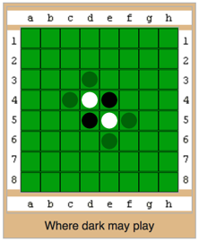
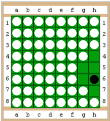

(for more elaborate rules, visit Wikipedia: Reversi Rules)
Each reversi token has a black side and white side. At the beginning of the game, you will be assigned a color, black or white. On your turn, place your token on the board so that an opponent's token(s) are between your tokens. All of your opponent's tokens, that are between your tokens, will be turned over to become your designated color. (See Fig.1 for possible opening moves)
The object of the game is to have more tokens on the board than your opponent when the game is over. The game is over when neither player has a move (e.g. board is full). (See. Fig. 2 for sample game ending)
You can capture vertical, horizontal, and diagonal rows of pieces. Also, you can capture more than one row at once.